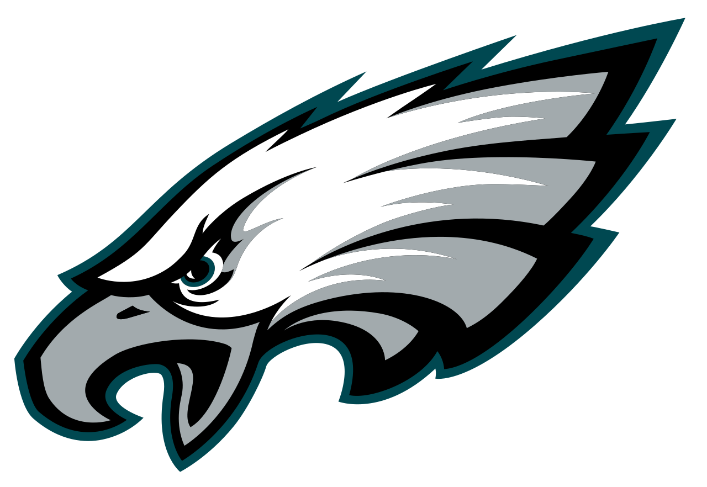

Philadelphia Eagles
Team History:
The Philadelphia Eagles are a professional American football team based in Philadelphia, Pennsylvania. The Eagles compete in the National Football League (NFL) as a member club of the league's National Football Conference (NFC) East division. The team plays its home games at Lincoln Financial Field. On February 4, 2018, the Eagles won Super Bowl LII, defeating the New England Patriots by a score of 41-33. This was the first Lombardi Trophy the team won.
Unfortunately, the 2020 season did not go according to plan. Quarterback Carson Wentz peformed the worst out of all starting quarterbacks. The team finished with a paltry 4-11-1 record, and the coaching staff was fired shortly after the regular season concluded. The Eagles hired Nick Sirianni as their new head coach going into the 2021 season. The team hopes to rebound after adding the new coaching staff and drafting Devonta Smith (WR- Alabama) with the 10th overall pick in the 2021 NFL Draft.